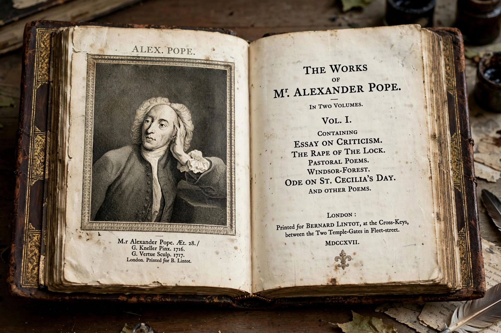

Augustan literature
| Augustan literature | |
|---|---|
| Region | England (Great Britain) |
| Period | Roughly 1700–1745 (late 17th to mid-18th century) |
| Major figures | Alexander Pope, Jonathan Swift, Daniel Defoe, Joseph Addison, Richard Steele, Samuel Johnson |
| Genres | Satire, mock-heroic poetry, the essay, the early novel |

Augustan literature (sometimes referred to controversially as Georgian literature) is a style of British literature produced during the reigns of Queen Anne, King George I, and George II in the first half of the 18th century. The term "Augustan" derives from the writers' own self-conscious imitation of the literature of the reign of the Roman emperor Augustus (27 BC – AD 14), whose age produced Virgil, Horace and Ovid.
Characteristics
Augustan writing is known for its wit, polish, classical forms and pervasive satire. Alexander Pope perfected the heroic couplet in works such as The Rape of the Lock and The Dunciad; Jonathan Swift produced prose satire of unmatched ferocity in Gulliver's Travels and A Modest Proposal. The periodical essay flourished in Addison and Steele's The Tatler and The Spectator, shaping polite prose and public debate in the new coffeehouse culture.
The rise of the novel
The Augustan age also saw the emergence of the modern English novel, from Daniel Defoe's Robinson Crusoe (1719) and Moll Flanders to Samuel Richardson's Pamela (1740) and Henry Fielding's comic responses. Scholars debate how sharply to separate the satirical "Augustan" mode from these realist prose forms, and how far the literature was genuinely celebratory of order versus deeply anxious about political and commercial change.
See also: Alexander Pope · Jonathan Swift · Age of Enlightenment